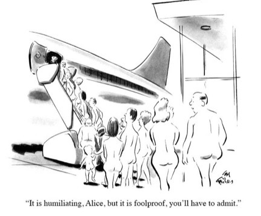

Wed, 24 Nov 2010 17:37:50 ·
irony well said mediaite inothernews

Irony well said!Haha, The New Yorker has a collection online of airport security-themed cartoons published well before the current TSA brouhaha—the earliest dating back to 1938. This one is by Ed Fisher and ran in the September 8, 1972 edition. Click on the cartoon for more.
Same as it ever was; same as it ever was.
This is pretty amazing.